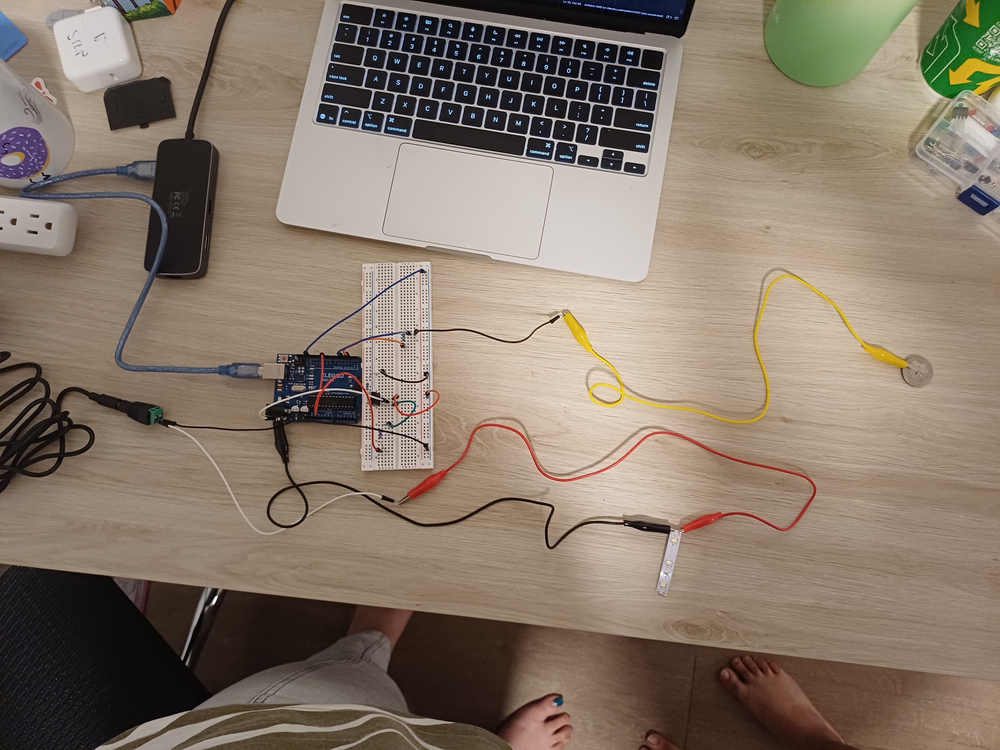
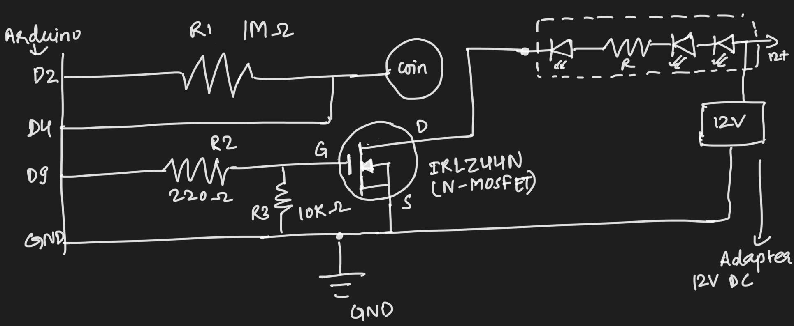
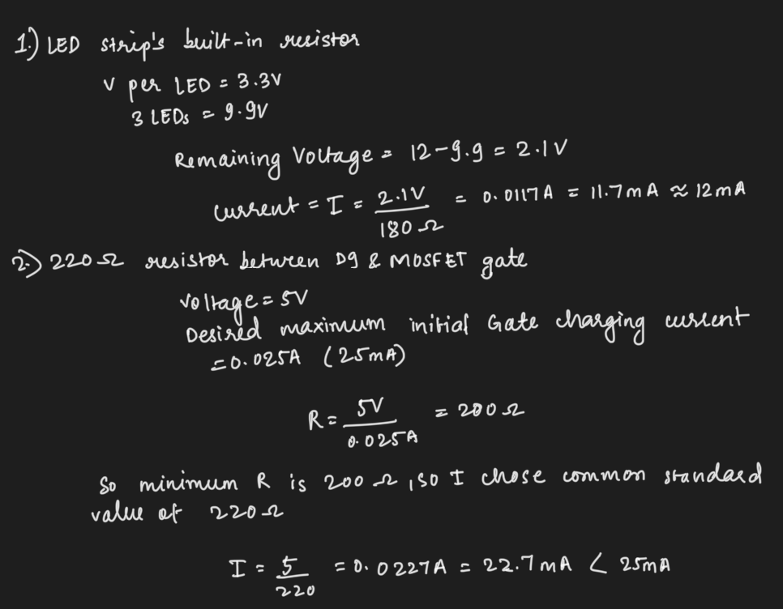
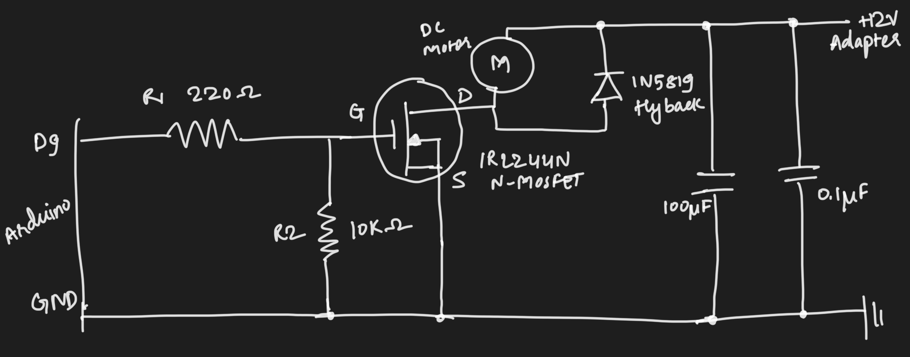
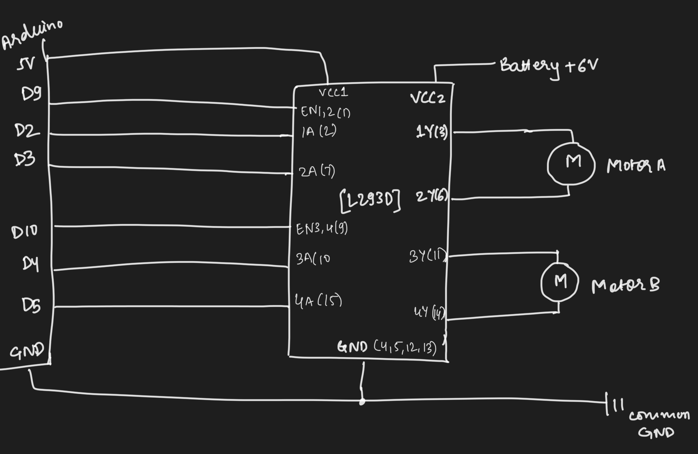

justification for components

I used a 10kΩ pull-down resistor between the MOSFET Gate and GND to prevent the Gate from floating when the Arduino is starting up or resetting. This keeps the LED strip off until the Arduino sends a control signal. When D9 is HIGH, the current through the 220Ω and 10kΩ resistors is approximately \(5/(220+10000)=0.489\text{ mA}\). The Gate voltage is approximately \(4.89V\), which is sufficient to control the MOSFET for my small LED load.
I used a 1MΩ resistor between Arduino digital pins D2 and D4 to create the capacitive sensing circuit. The connected coins act as the touch electrode. I chose a 1MΩ resistor because the lecture recommends this value for capacitive touch sensing. Its high resistance allows the sensor to detect small changes in capacitance when a person touches the coins.The resistor provides enough sensitivity to detect direct touch without making the sensor overly sensitive. Higher resistance values, such as 10MΩ or 40MΩ, can detect touch from farther away, but may also make the sensor more sensitive and slower to respond.
#include
// D2 sends the signal, D4 receives it
CapacitiveSensor touchSensor = CapacitiveSensor(2, 4);
// MOSFET Gate is controlled through D9
const int mosfetPin = 9;
// Starting touch threshold
const long touchThreshold = 200;
// Current LED brightness
int brightness = 0;
void setup() {
Serial.begin(9600);
pinMode(mosfetPin, OUTPUT);
// Disable automatic recalibration
touchSensor.set_CS_AutocaL_Millis(0xFFFFFFFF);
// Start with the LED strip off
analogWrite(mosfetPin, 0);
}
void loop() {
// Read the capacitive touch sensor
long touchValue = touchSensor.capacitiveSensor(30);
// Display sensor readings
Serial.println(touchValue);
if (touchValue > touchThreshold) {
// Gradually increase brightness when touched
brightness = min(brightness + 5, 255);
} else {
// Turn off when not touched
brightness = 0;
}
// Send PWM signal to MOSFET Gate
analogWrite(mosfetPin, brightness);
delay(20);
}
The MOSFET I am using is the IRLZ44N N-channel MOSFET. According to its datasheet, the absolute maximum continuous drain current (\(I_D\)) between pin 2 (Drain) and pin 3 (Source) is 47 A at a case temperature of 25°C.


// Pins used to control motor A
const int ENA = 9; // Controls motor A's speed
const int IN1 = 2; // Controls motor A's direction
const int IN2 = 3; // Works with IN1 to set the direction
// Pins used to control motor B
const int ENB = 10; // Controls motor B's speed
const int IN3 = 4; // Controls motor B's direction
const int IN4 = 5; // Works with IN3 to set the direction
v
void setup() {
// Set the motor control pins as outputs
pinMode(ENA, OUTPUT);
pinMode(IN1, OUTPUT);
pinMode(IN2, OUTPUT);
pinMode(ENB, OUTPUT);
pinMode(IN3, OUTPUT);
pinMode(IN4, OUTPUT);
}
// This function controls the direction and speed of both motors
void drive(int dirA, int dirB, int speed) {
// Set motor A to move forward or backward
digitalWrite(IN1, dirA > 0);
digitalWrite(IN2, dirA < 0);
// Do the same for motor B
digitalWrite(IN3, dirB > 0);
digitalWrite(IN4, dirB < 0);
// Set how fast each motor spins
analogWrite(ENA, speed);
analogWrite(ENB, speed);
}
void loop() {
// Move both motors forward for 2 seconds
drive(+1, +1, 200);
delay(2000);
// Move both motors backward for 2 seconds
drive(-1, -1, 200);
delay(2000);
// Move motor A forward and motor B backward
drive(+1, -1, 200);
delay(2000);
// Move motor A backward and motor B forward
drive(-1, +1, 200);
delay(2000);
// Stop both motors for 1 second before repeating
drive(0, 0, 0);
delay(1000);
}
I used ChatGPT to help me understand how the MOSFET works, check my resistor calculations, and clarify the connections between the Arduino, LED strip, and external power supply. I also used it to help organize my explanations and improve the comments in my code. I built and tested the circuit myself, checked the connections, and used my lecture slides and the MOSFET datasheet to verify the information. AI was helpful in understanding the concepts, but I still needed to troubleshoot the circuit and make sure everything worked correctly.
Prompt: Can you review my Arduino code and help me write clearer comments explaining what each line does?
AI Output:
Your code uses the CapacitiveSensor library to detect when the coin is touched and controls the LED strip's brightness using PWM through the MOSFET. The overall logic looks good. I would recommend adding comments above the lines in setup() and loop() that don't have explanations yet, especially Serial.begin(), pinMode(), the if statement, and delay().
Here is your code with clearer comments:
#include
// D2 sends the signal, D4 receives it
CapacitiveSensor touchSensor = CapacitiveSensor(2, 4);
// MOSFET Gate is controlled through D9
const int mosfetPin = 9;
// Starting touch threshold
const long touchThreshold = 200;
// Current LED brightness
int brightness = 0;
void setup() {
Serial.begin(9600);
pinMode(mosfetPin, OUTPUT);
// Disable automatic recalibration
touchSensor.set_CS_AutocaL_Millis(0xFFFFFFFF);
// Start with the LED strip off
analogWrite(mosfetPin, 0);
}
void loop() {
// Read the capacitive touch sensor
long touchValue = touchSensor.capacitiveSensor(30);
// Display sensor readings
Serial.println(touchValue);
if (touchValue > touchThreshold) {
// Gradually increase brightness when touched
brightness = min(brightness + 5, 255);
} else {
// Turn off when not touched
brightness = 0;
}
// Send PWM signal to MOSFET Gate
analogWrite(mosfetPin, brightness);
delay(20);
}